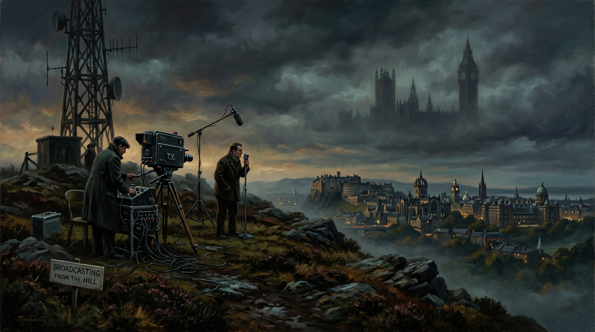

The Misrepresentation of Scotland
A Forensic Exposure of UK Mainstream Media During the Independence Debate.

The claim that UK mainstream media misrepresented Scotland during the independence debate is not a matter of nationalist sentiment or emotional grievance; it is a matter of documented editorial behaviour, institutional structure, and the PATTERNS that emerge when you examine the coverage with forensic precision. The BBC and other UK‑wide broadcasters operate from London, shaped by Westminster’s gravitational pull, and the result is a media environment that narrates Scotland’s constitutional future through assumptions that do not originate in Scotland. This is not conspiracy; it is structural reality, structural reality produces PATTERNS, and those PATTERNS shaped the referendum coverage in ways that materially affected public perception.
1. Geographical Centralisation
The first structural truth is geographical centralisation. UK mainstream media is headquartered in London, and its editorial culture is steeped in Westminster politics. Senior correspondents, political editors, and decision makers live and breathe the rhythms of the UK Parliament. When Scotland entered a constitutional crisis, the coverage was filtered through that worldview. Academic studies conducted after the referendum found that BBC reporting displayed a “clear pattern of bias” in favour of the No campaign particularly in its framing of economic uncertainty and its reliance on pro Union experts. Another analysis found that coverage leaned heavily toward “risk, instability, and uncertainty”, with independence framed as a leap into the unknown rather than a legitimate constitutional option. These are of course documented PATTERNS.
2. Economic Fear
The second structural truth is economic fear. The “too wee, too poor, too stupid” trope was not invented by independence supporters it emerged from decades of commentary about Scotland’s fiscal position within the UK. During the referendum, this narrative was not spoken aloud by broadcasters, but its logic permeated coverage. When David Cameron and Gordon Brown entered the campaign late their interventions were framed as authoritative warnings from experienced statesmen. Their arguments that independence threatened pensions, currency stability, EU membership, and economic security were said across UK media. The BBC covered these interventions extensively, often with live broadcasts, extended interviews, and prominent placement in news bulletins. Independence supporting economists were given less airtime, and their arguments were often presented as speculative while Westminster warnings were presented as authoritative. This imbalance was not random it was part of a broader PATTERN of weighting UK government voices more heavily than Scottish ones.
“This is not conspiracy; it is structural reality. Structural reality produces PATTERNS, and those PATTERNS shaped the referendum coverage in ways that materially affected public perception.”
— Trevor Swistchew, The Misrepresentation of Scotland
3. The Treatment of Scotland’s Government
The third structural truth is the treatment of Scotland’s government. The SNP was the governing party of Scotland during the referendum, yet UK media often framed it as a partisan insurgency rather than a legitimate national government. Coverage of Alex Salmond frequently emphasised personality, conflict, and confrontation. Nicola Sturgeon, though widely respected, was often framed through the lens of party politics rather than national leadership. This is not unusual in political journalism, but in the context of a constitutional referendum, it contributed to a perception that independence was a party project rather than a national movement. The BBC’s editorial guidelines require impartiality, but impartiality is not achieved simply by giving both sides airtime; it is achieved by balancing frames, sources, and assumptions. In 2014, the framing leaned toward caution, continuity, and the authority of the UK state. This was not accidental; it was part of a structural PATTERN.
4. The “Vow”
The fourth structural truth is the “Vow”. Days before the referendum, the Daily Record published a front‑page promise from Cameron, Miliband and Clegg offering extensive new powers for Scotland if it voted No. The BBC covered the story prominently. Critics argued that the timing and framing of the Vow constituted interference, and that the BBC’s coverage amplified a political manoeuvre without sufficient scrutiny. Defenders argued that the Vow was newsworthy and that the BBC had a duty to report it. Both positions have merit, but the event illustrates how editorial decisions can shape public perception at critical moments. The Vow was not analysed with the same scepticism applied to independence claims it was presented as a credible, authoritative intervention from the UK’s political leadership. This was not an isolated incident; it was part of a broader PATTERN of treating Westminster voices as inherently authoritative.
5. The Aftermath
The fifth structural truth is the aftermath. After the referendum, trust in UK media collapsed among independence supporters. Surveys showed that a significant portion of Yes voters believed the BBC had been biased. This perception did not arise from propaganda; it arose from lived experience of coverage that felt weighted toward the Union. Whether that perception is fully justified is debatable, but it is real, and it has shaped Scottish media politics ever since. The BBC became, in the eyes of many Scots, not a neutral broadcaster but an institution aligned with the constitutional status quo. This perception did not emerge from isolated incidents; it emerged from cumulative PATTERNS.
6. Editorial Culture
The sixth structural truth is editorial culture. Impartiality, as defined by the BBC Charter, does not mean neutrality. It means balance across a range of perspectives. But balance is not achieved by arithmetic; it is achieved by framing. If independence is framed as risk, instability, and disruption, while the Union is framed as continuity, stability, and security, then the coverage is structurally biased even if both sides are given airtime. This is what happened in 2014. Independence was framed as a problem to be solved, a danger to be avoided, a leap into the unknown. The Union was framed as the default, the baseline, the safe option. This framing was not malicious; it was cultural. It reflected the worldview of institutions whose political centre of gravity lies in Westminster. This worldview produced consistent PATTERNS.
7. The Absence of Scottish Editorial Autonomy
The seventh structural truth is the absence of Scottish editorial autonomy. Scotland has its own BBC channels, but the political coverage that shapes national perception is produced by UK‑wide units. This means that Scotland’s constitutional debate was narrated by journalists whose professional lives revolve around Westminster politics. Their assumptions, their sources, their networks, their instincts are shaped by the UK state. This does not make them propagandists, but it does make them incapable of narrating Scotland’s constitutional future from a Scottish perspective. This incapacity is not personal it is institutional, institutional incapacity produces PATTERNS.
8. The Myth of Vetting
The eighth structural truth is the myth of vetting. UK media does not “vet” Scottish news for impartiality before broadcast. It applies editorial judgement legal review, and compliance checks, but these are internal processes shaped by institutional culture. Ofcom enforces standards on accuracy, harm or offence, but it does not approve content or certify impartiality. The idea that Scottish news is filtered through a neutral, objective vetting process is false. It is filtered through editorial decisions made in London. Those decisions are not random they follow PATTERNS.
9. The Cumulative Effect of These Dynamics
The ninth structural truth is the cumulative effect of these dynamics. No single broadcast proves bias. No single headline proves misrepresentation except the accumulation of framing, weighting, emphasis, and omission creates a narrative. In 2014, that narrative leaned toward caution, continuity and the authority of the UK state. It leaned toward economic fear. It leaned toward Westminster voices. It leaned toward risk‑heavy framing of independence. It leaned toward scepticism of the SNP. It leaned toward the Union. These cumulative tendencies were not isolated incidents; they were PATTERNS.
10. The Consequence
The tenth structural truth is the consequence. Scotland’s constitutional debate was not narrated from Scotland. It was narrated from London. It was narrated through the worldview of institutions aligned with the UK state. It was narrated through assumptions that did not originate in Scotland. This does not prove conspiracy. It proves structural bias manifests as PATTERNS.
This is the truth. Not propaganda. Not denial. Not rage. Not conspiracy.
Just the hard, documented reality of how media works in a state where political power is centralised and editorial culture follows that power.
Structural Bias, Framing, and the Post-2014 Trust Deficit
Examine the academic literature, empirical broadcast audits, and regulatory architecture corroborating Trevor Swistchew's analysis of UK mainstream media coverage during the 2014 Scottish independence campaign.
Empirical Audits of Referendum News Coverage
Prof. John Robertson / UWS (2014)In 2014, Prof. John Robertson of the University of the West of Scotland conducted an exhaustive empirical content analysis of BBC Reporting Scotland and ITV News at Ten over a twelve-month period leading up to the referendum. The study systematically recorded news packages, source attribution, subject matter, and editorial balance.
Pro-Union voices, UK government ministers, and London financial institutions outnumbered Yes campaigners and Scottish Government spokespeople by a ratio exceeding 3:2 across peak bulletins.
Economic uncertainties (currency, pensions, EU accession) were repeatedly framed as insurmountable catastrophic risks, while the perils of remaining within a post-referendum UK were almost entirely unexamined.
Cited Scholarly Literature & Archival Sources
Fairness in the First Draft of History: An Empirical Analysis of BBC and ITV Coverage of the Scottish Independence Referendum Campaign. University of the West of Scotland.
Framing: Toward Clarification of a Fractured Paradigm. Journal of Communication, 43(4), 51–58.
Scotland’s Referendum and the Media: National and International Perspectives. Edinburgh University Press.
Whither Public Service Broadcasting in the Devolved Nations? Centre for Cultural Policy Research, University of Glasgow.
The Ofcom Broadcasting Code: Section Five (Due Impartiality and Due Accuracy). Office of Communications, London.
Democracy Max: A Vision for a Good Scottish Democracy and Referendum Deliberation Audit. ERS Scotland.